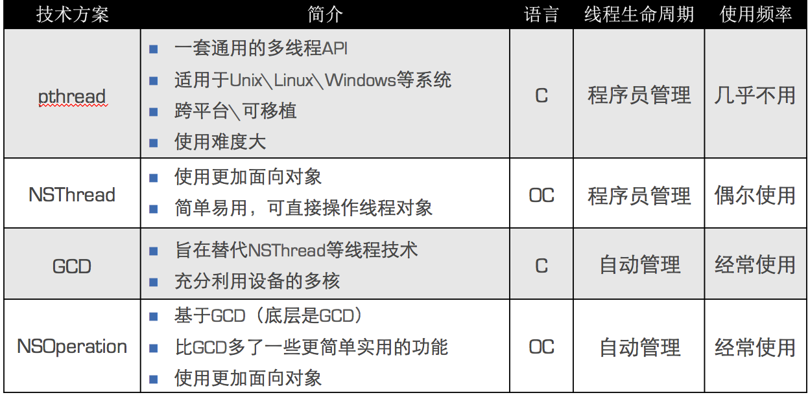
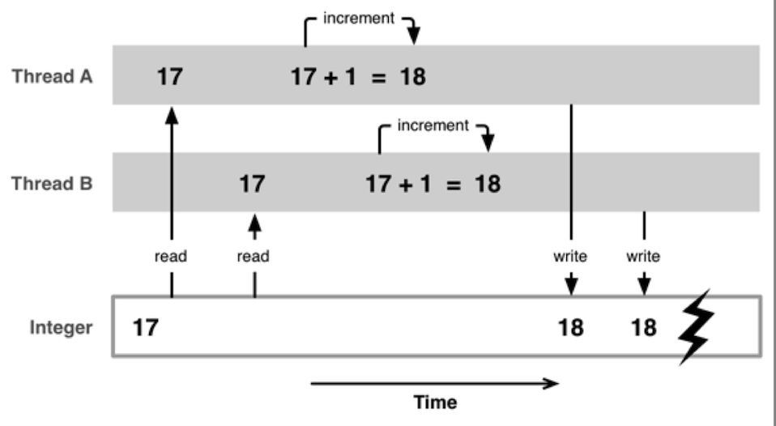

iOS中的多线程NSThread
ios中的实现方案，有下图所列出的这些：

NSThread
一个NSThread对象就代表一条线程。创建NSThread线程有三个方法。
// 1.通过init创建，在调用start启动
NSThread *thread = [[NSThread alloc] initWithTarget:self selector:@selector(run) object:nil];
[thread start];
// 2.创建线程后自动启动线程
[NSThread detachNewThreadSelector:@selector(run) toTarget:self withObject:nil];
// 3. 隐式创建并启动线程
[self performSelectorInBackground:@selector(run) withObject:nil];
主线程的相关方法有：
(NSThread *)mainThread; // 获得主线程
-(BOOL)isMainThread; // 是否为主线程
+(BOOL)isMainThread; // 是否为主线程
获得当前线程，可以调用+currentThread方法。
线程的调度优先级:
+ (double)threadPriority;
+ (BOOL)setThreadPriority:(double)p;
调度优先级的取值范围是0.0~1.0，默认是0.5,值越大，优先级越高。
要访问或设置线程的名字,调用如下方法:
- (void)setName:(NSString *)n;
- (NSString *)name;
控制线程状态
启动线程
- (void)start;
阻塞（暂停）线程
- (void)sleepUntilDate:(NSDate *)date;
- (void)sleepForTimeInterval:(NSTimeInterval)ti;
强制停止线程
- (void)exit; // 进入死亡状态
一旦线程停止了，就不能再次开启任务。
多线程的安全隐患
1块资源可能会被多个线程共享，也就是多个线程可能会访问同一块资源,比如多个线程访问同一个对象、同一个变量、同一个文件,当多个线程访问同一块资源时，很容易引发数据错乱和数据安全问题。如下：

互斥锁
可以通过加锁解决多线程的安全问题。
@synchronized(锁对象) { // 需要锁定的代码 }
锁定一份代码只能加一把锁。
互斥锁的优缺点
- 优点：能有效防止因多线程抢夺资源造成的数据安全问题*
- 缺点：需要消耗大量的CPU资源
使用互斥锁的前提是多线程抢夺统一块资源。
原子和非原子属性
OC在定义属性时有nonatomic和atomic两种选择
- atomic：原子属性，为setter方法加锁（默认就是atomic）
- nonatomic：非原子属性，不会为setter方法加锁
atomic加锁原理：
@property (assign, atomic) int age;
- (void)setAge:(int)age
{
@synchronized(self) {
_age = age;
}
}
nonatomic和atomic对比
- atomic：线程安全，需要消耗大量的资源
- nonatomic：非线程安全，适合内存小的移动设备
iOS开发的建议
- 所有属性都声明为nonatomic
- 尽量避免多线程抢夺同一块资源
- 尽量将加锁、资源抢夺的业务逻辑交给服务器端处理，减小移动客户端的压力
线程间通信
在1个进程中，线程往往不是孤立存在的，多个线程之间需要经常进行通信。线程间通信体现在：
- 1个线程传递数据给另1个线程
- 在1个线程中执行完特定任务后，转到另1个线程继续执行任务
线程间通信常用方法
- (void)performSelectorOnMainThread:(SEL)aSelector withObject:(id)arg waitUntilDone:(BOOL)wait;
- (void)performSelector:(SEL)aSelector onThread:(NSThread *)thr withObject:(id)arg waitUntilDone:(BOOL)wait;